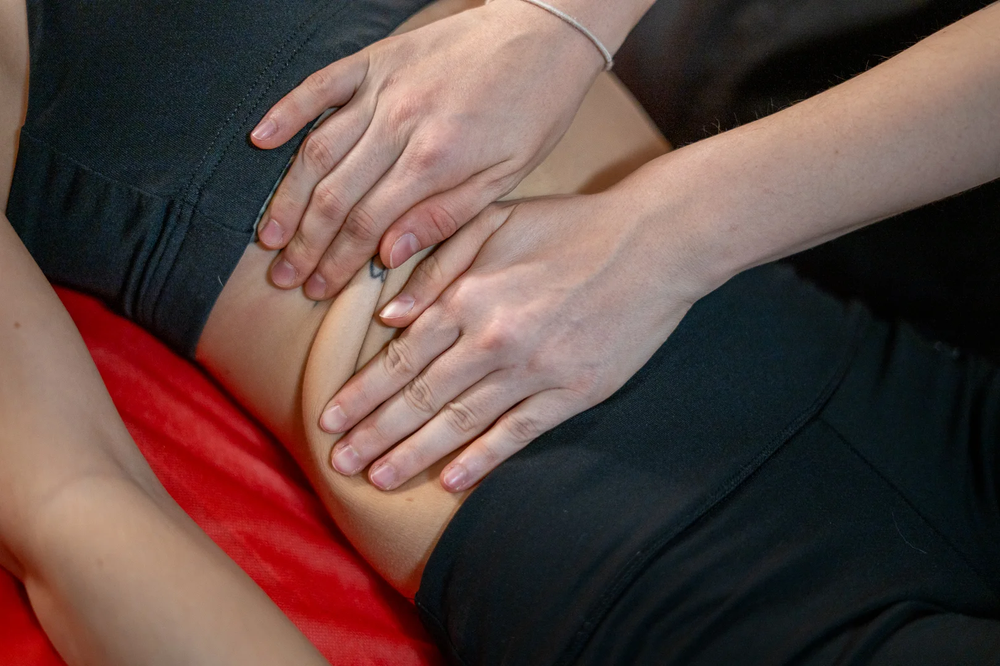
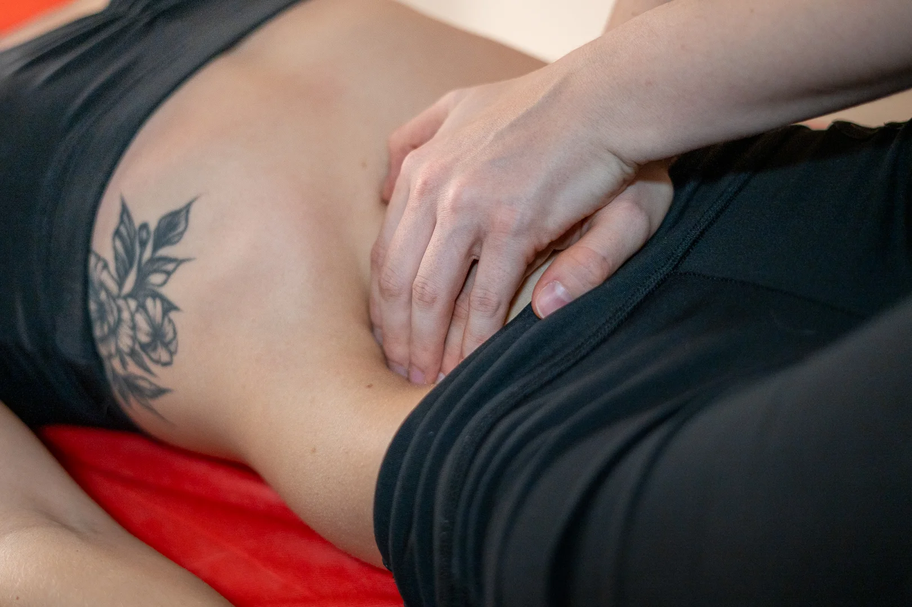

Viscerális terápia
A viscerális terápia a belső szervek mobilizálásval foglalkozó
manuálterápiás kezelés. Minden belső szervünket beborítja egy
átlátszó, vékony, nedves hártya, a fascia. Ez egyrészt formát ad az
adott szervnek, másrészt segíti, hogy el tudjanak csúszni egymáson a
szövetek. A jelenlegi életmódunkkal (ülő, mozgásszegény életmód,
stressz, kevés folyadékbevitel) a szervek nem mozognak eleget, emiatt
könnyen kialakulhatnak adhéziók, más néven összenövések az adott
szövetek között. Ezek az összenövések tovább korlátozzák a szervek
mozgását, romlik a lokális keringésük, ezáltal a funkciójuk is
csökken. Ezt nem úgy kell érteni, hogy beteg lesz az adott szerv, csak
nem tud száz százalékot nyújtani, ilyenkor bizonyos tünetekkel jelez
az idegrendszernek, hogy valamit foglalkozni kéne vele.
Mivel ez egy manuális kezelés, a páciens részéről többnyire passzív
terápia, viszont ezek minden esetben csak kiegészítő kezelések
lehetnek. A megfelelő hatás eléréséhez szükséges bizonyos életmódbeli
változtatásokat eszközölni és a terapeuta által adott házi feladatokat
végezni.
Hogy zajlik egy kezelés?
- Többnyire fekvő vagy ülő helyzetben
- Masszázshoz hasonló fogásokkal történik a hason
-
Akupresszúrás fogásokkal egészíthető ki a talpon és a fülön
-
Gyakran nyaki kezeléssel egészül ki (stresszoldó hatása miatt)
-
Általában nagyon kellemes, de előfordulhatnak fájdalmasabb
pontok


Mikor ajánlott?
-
Nőgyógyászati kórképeknél, pl.: méh- és petefészekciszták,
endometriózis, menstruációs zavarok, fájdalmas menstruáció,
mióma, PCOS, gátfájdalom
-
Belgyógyászati kórképeknél, pl.: reflux, Crohn betegség, IBS,
felszívódási zavarok, ételallergiák, gyomor-, bélproblémák,
puffadások, székelési zavarok, stb.
- Szülés után 12 héttel
- Nagy hasi vagy kismedencei műtétek után 12 héttel
-
Meddőségi zavarok esetén, ha az egyéb szervi okok ki lettek
zárva
- Bizonytalan eredetű mozgásszervi panaszok esetén
- Stressz eredetű hasi panaszok csökkentésére
Mikor nem végezhető?
- Akut gyulladások esetén
-
Rosszindulatú vagy áttétes daganatok esetén csak kizárólag orvos
írásbeli kérésére végezhető
- Várandósság ideje alatt
-
Csecsemőkön, kisgyermekeken kb. 9 éves kor alatt nem alkalmazzuk
-
Nőgyógyászati spirál esetén mély hasi fogásokat nem
alkalmazhatunk